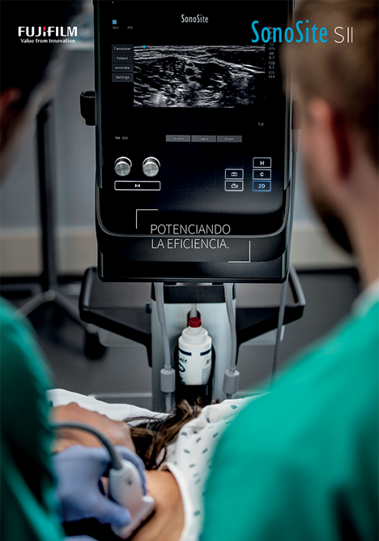
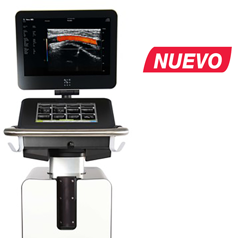

SERIES II
Potenciando la eficiencia

Registro Sanitario: 2693E2016 SSA
ESPECIFICACIONES TÉCNICAS:
Tecnología:
• Menú con pantalla táctil que se adapta automáticamente a sus necesidades.
• Botones giratorios para el control de la profundidad y la ganancia.
• Ratón táctil virtual que sólo aparece cuando se necesita.
• Control flexible de calibre, zoom y cuadro de color a través de un ratón táctil virtual o pantalla táctil.
• Fácil acceso a controles usados con más frecuencia (modo, imprimir, guardar).
• Conector de doble transductor integrado: cambie entre tipos de exámenes o transductores con sólo dos toques en la pantalla.
• Cajón con llave con bandeja trasera.
• Soporte específico para bote de gel.
• Protectores de transductor personalizados y elevados.
• Cestas de almacenamiento grandes extraíbles.
CARACTERÍSTICAS:
SENSIBILIDAD A LOS COLORES REFORZADA.
Gracias a dualflex y al diseño de lente fina, combinado con los nuevos avances en optimización de imágenes, se ha mejorado el transductor HFL38xi para mejorar la penetración, claridad y sensibilidad a los colores. Ahora podrá ver mejor nervios y vasos, ya sea para procedimientos ecoguiados como para análisis de flujos.
EXPERIENCIA DE OBTENCIÓN DE IMAGEN MEJORADA.
La tecnología DirectClear™ es un nuevo proceso pendiente de patente que aumenta el rendimiento del transductor:
• Penetración y resolución de contraste mejoradas: se ha integrado un material más eficiente al diseño que permite generar una mayor señal acústica que diferencia este modelo de los transductores SonoSite convencionales.
Además, se ha añadido una capa reflectante para reducir la pérdida de esta señal, que se transmite al paciente.
• Resolución de los detalles más nítida: se ha añadido una capa adicional para proporcionar un mejor encaje acústico entre el transductor y el paciente, aumentando así la capacidad de resolver estructuras pequeñas, de modo que se puede diagnosticar con más confianza.
|
APLICACIONES POINT OF CARE SERIES II |
|
|
Anestesia |
Guía de accesos vasculares, anestesia regional, monitoreo intraoperatorio, volumen de fluidos y función cardiaca. |
|
Medicina de cuidados críticos |
Guía de procedimientos, evaluación pulmonar. |
|
Medicina de urgencias |
FAST, evaluación enfocada de urgencias, guía de procedimientos. |
|
Cirugía general |
Ultrasonografía de mama, guía de procedimientos, evaluación intraoperatoria. |
|
Radiología intervencionista |
Procedimientos guiados. |
|
Veterinaria |
Guía de procedimientos y ultrasonido general. |
|
Urología |
Renal, vejiga, evaluación de próstata y procedimientos guiados. |
|
Neonatología |
Craneal y evaluación pulmonar. |
vevo MD

Registro Sanitario: 2694E2016 SSA
Vevo® MD es el primer sistema del mundo de ultra alta frecuencia. Ofrece la misma resolución posible en ecografía médica en los primeros 3 cm del cuerpo.
• Visualiza las anatomías pequeñas.
• Gamas de transductores de frecuencia ultra elevada muy avanzados hasta 70 MHz.
• Interfaz de pantalla táctil personalizable fácil de usar que reduce los tiempos de examen.
• Tecnología innovadora que abre nuevas posibilidades en el tratamiento de imágenes médicas.
|
APLICACIONES VEVO MD |
|
|
Anestesia |
Guía de accesos vasculares, anestesia regional, monitoreo intraoperatorio, volumen de fluidos y función cardiaca. |
|
Dermatología |
Evaluación de lesiones de piel y tumores. |
|
Endocrinología y cirugía endocrina |
Evaluación de tiroides y paratiroides, guía de procedimientos. |
|
Cirugía vascular |
Carótida, evaluación arterial y venosa, guía de procedimientos, valoración del grosor íntima media en carótidas. |
|
Pediatría y neonatología |
Evaluación pulmonar, craneal, abdominal, canal medular, evaluación de nódulos. |
|
Reumatología |
Monitoreo de sinovitis, procedimientos guiados. |
|
Investigación |
Desarrollo y correlación de patologías, protocolos de investigación. |
DATOS COMPLEMENTARIOS: En FUJIFILM de México queremos convertirnos en su mejor aliado, es por eso que estamos comprometidos con nuestros clientes y ofrecemos el mejor servicio posventa.
FUJIFILM DE MÉXICO, S.A. de C.V.
Teléfono: (55) 5263-5500
e-mail: ultrasonido@fujifilm.com.mx
www.fujifilm.com.mx